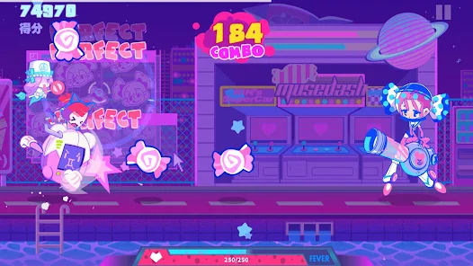

A Muse Dash egy dinamikus ritmusjáték, amelyben a játékosok akcióban gazdag pályákat teljesíthetnek, miközben a zenére haladnak előre. A játék gyors tempójú és stílusos akciókat kínál, amelyek izgalmas élményt nyújtanak a játékosoknak.
A Muse Dash játékmenete egyszerű: a játékosoknak meg kell ütniük a képernyőn megjelenő elemeket és akadályokat a megfelelő időben, hogy pontokat szerezzenek és haladjanak a pályákon.
A Sunny Day egy könnyű bevezetés a Muse Dash világába, élénk színekkel és pörgős zenékkel.
A Starry Night egy közepes nehézségű pálya, amely változatos akciókat és kihívásokat kínál a játékosoknak.
A Midnight Madness egy nehéz szintű pálya, amely gyors reakciókat és precíz ütéseket igényel a játékosoktól.
A Muse Dash közössége élénk és aktív, a játékosok online ranglistákon versenyeznek, hogy megmutassák képességeiket és pontszámukat.
A játék elérhető különféle platformokon, beleértve a PC-t, a mobiltelefont és a konzolokat.
A Muse Dash letölthető a hivatalos alkalmazás áruházakból, és könnyen telepíthető a kívánt platformon.